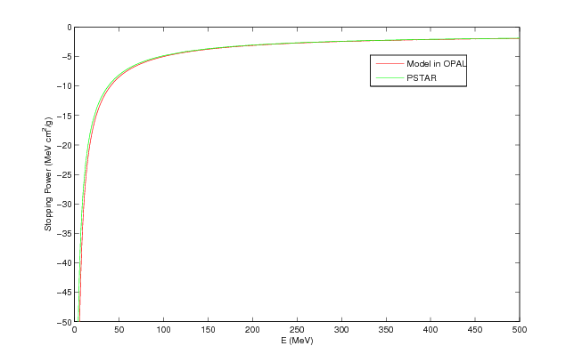
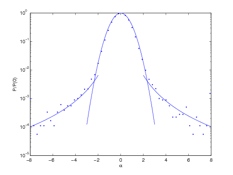
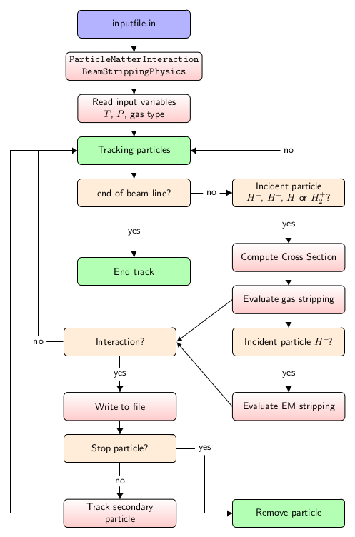
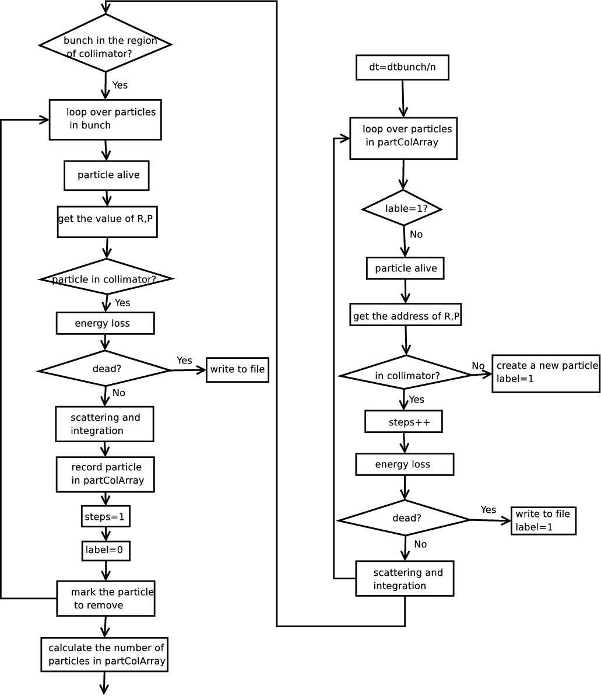
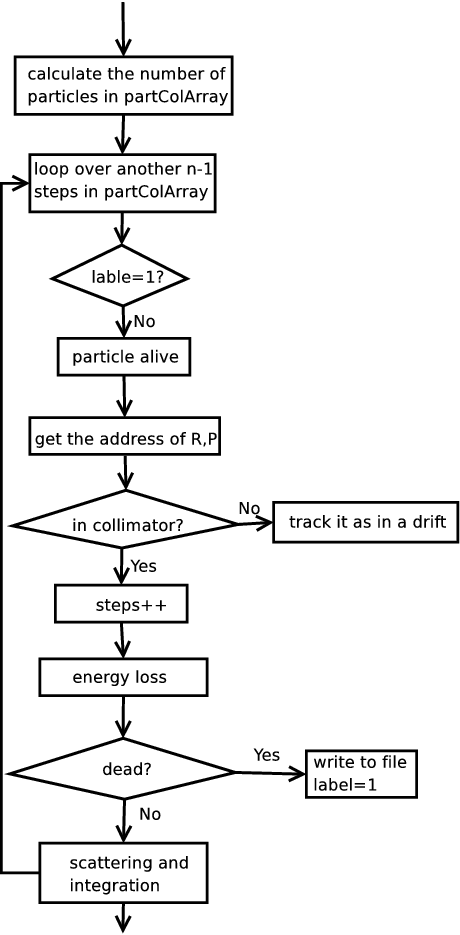
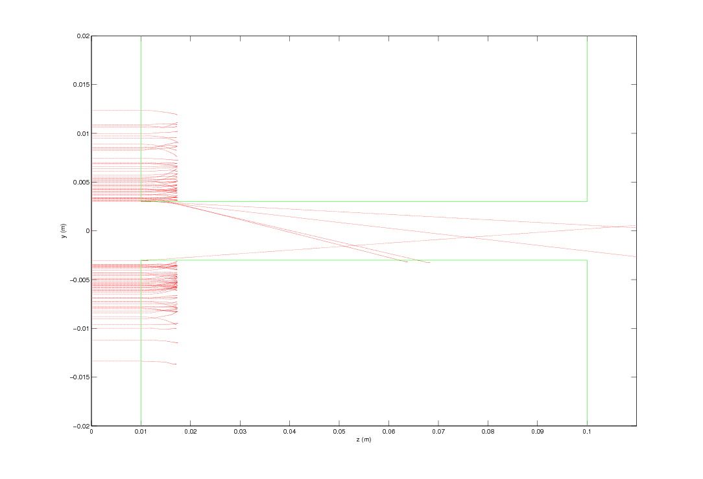
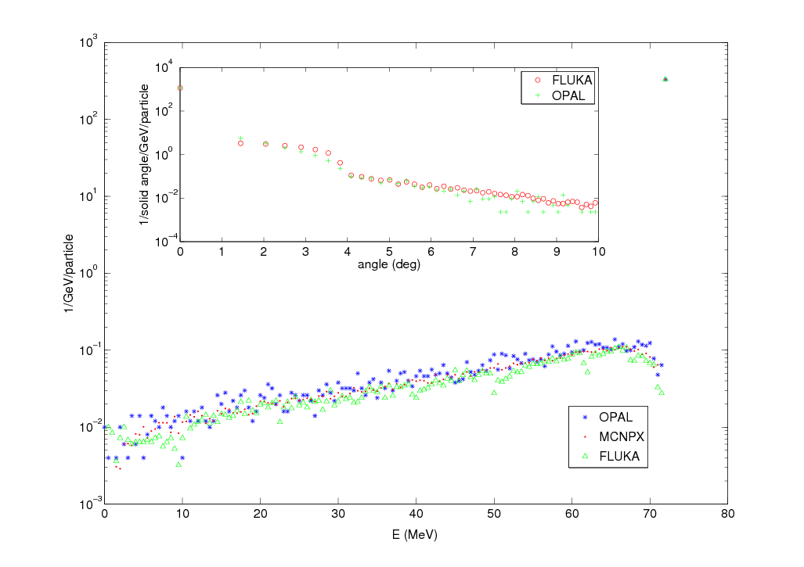

22 Physics Models Used in the Particle Matter Interaction Model
The chapter below describes the legacy OPAL particle-matter interaction module. It is not currently mirrored as a like-for-like user interface in OPALX.
Particle-matter interactions are defined through PARTICLEMATTERINTERACTION.
22.1 Command Overview
The core attributes are:
| Attribute | Meaning |
|---|---|
TYPE |
Interaction handler: SCATTERING or BEAMSTRIPPING |
MATERIAL |
Surface or medium material |
ENABLERUTHERFORD |
Enable or disable large-angle Rutherford scattering |
LOWENERGYTHR |
Low-energy cutoff in MeV; particles below this are removed |
The resulting interaction model is then attached to beamline elements that represent material boundaries or residual-gas regions.
22.2 The Energy Loss
The mean ionization energy loss is modeled with the Bethe-Bloch equation,
\[ -\frac{dE}{dx} = \frac{K z^2 Z}{A \beta^2} \left[ \frac{1}{2}\ln\left(\frac{2 m_e c^2 \beta^2 \gamma^2 T_{\max}}{I^2}\right) - \beta^2 \right], \tag{22.1}\]
where Z, A, I, beta, gamma, and Tmax have their usual stopping power meaning and
\[ T_{\max} = \frac{2 m_e c^2 \beta^2 \gamma^2} {1 + 2 \gamma m_e/M + (m_e/M)^2}. \tag{22.2}\]
The manual states that this form is used for incident PROTON, DEUTERON, MUON, HMINUS, and H2P beams over the documented energy ranges, and also for ALPHA particles in their supported range.

At low energy the stopping power is switched to Andersen-Ziegler-style semi-empirical fits. The implementation also models energy straggling with a Gaussian width
\[ \sigma_0^2 = 4 \pi N_A r_e^2 (m_e c^2)^2 \rho \frac{Z}{A} \Delta s. \tag{22.3}\]
Particles whose remaining energy drops below LOWENERGYTHR are removed and written to the corresponding loss file.
22.3 The Coulomb Scattering
The Coulomb-scattering model is split into:
- multiple Coulomb scattering
- large-angle Rutherford scattering
The distributions are written in the legacy manual as
\[ P_M(\alpha)\, d\alpha = \frac{1}{\sqrt{\pi}} e^{-\alpha^2}\, d\alpha \tag{22.4}\]
and
\[ P_S(\alpha)\, d\alpha = \frac{1}{8 \ln(204 Z^{-1/3})} \frac{1}{\alpha^3}\, d\alpha, \tag{22.5}\]
with transition scale
\[ \theta_0 = \frac{13.6\,\mathrm{MeV}}{\beta c p}\, z \sqrt{\Delta s / X_0}\, [1 + 0.038 \ln(\Delta s / X_0)]. \tag{22.6}\]
22.3.1 Multiple Coulomb Scattering
For the multiple-scattering branch, independent Gaussian random variables are used to update both transverse coordinates and transverse momenta over the substep. The model gives the cumulative small-angle deflection caused by many soft collisions in the material.
22.3.2 Large Angle Rutherford Scattering
The rare large-angle tail is handled separately as a Rutherford-scattering process. The legacy implementation samples this branch probabilistically and then draws the corresponding scattering angle from the cumulative distribution.

22.4 Beam Stripping Physics
Beam stripping covers:
- interaction with residual gas
- electromagnetic or Lorentz stripping
The common stochastic model assumes a mean free path lambda and interaction probability
\[ P(x) = 1 - e^{-x/\lambda}. \tag{22.7}\]

22.4.1 Residual Gas Interaction
For a gas mixture, the total inverse mean free path is the sum of the component-wise contributions. The implementation supports charge-exchange and electron-detachment or capture reactions for the incoming species documented in the legacy manual:
HMINUSPROTONHYDROGENH2PDEUTERON
The cross sections are fitted from experimental data with different families of analytic expressions depending on projectile and target:
- Nakai function
- Tabata function
- Barnett function
- Bohr function
22.4.2 Electromagnetic Stripping
For HMINUS, the model also accounts for magnetic-field-induced dissociation. The transverse magnetic field from the cyclotron map produces a rest-frame electric field through
\[ E = \gamma \beta c B. \tag{22.8}\]
The stripping fraction during a time step dt is then
\[ f_{\mathrm{em}} = 1 - e^{-dt / (\gamma \tau)}. \tag{22.9}\]
The manual explicitly restricts this electromagnetic stripping path to OPAL-cycl.
22.5 The ScatteringPhysics Substeps
The implementation uses internal substeps when the main tracking step is too large for accurate material-interaction physics. In the legacy code path, ScatteringPhysics.cpp subdivides the step so that the material-interaction substep stays below the documented threshold. Particles already inside the element and particles entering the element are then advanced consistently over the same physical time interval.


22.6 Available Materials in OPAL
The material database includes the standard beamline materials listed in the legacy manual, among them:
AirAluminumAluminaAl2O3BerylliumBoronCarbideCopperGoldGraphiteGraphiteR6710KaptonMolybdenumMylarTitaniumWater
For each material the original manual provides:
- atomic number
Z - atomic weight
A - mass density
rho - radiation length
X0 - mean excitation energy
I - Andersen-Ziegler low-energy fit coefficients
22.6.1 Material properties
| Material | Z |
A |
rho [g/cm^3] |
X0 [g/cm^2] |
I [eV] |
|---|---|---|---|---|---|
Air |
7 | 14 | 1.205e-3 | 36.62 | 85.7 |
Aluminum |
13 | 26.9815384 | 2.699 | 24.01 | 166.0 |
AluminaAl2O3 |
50 | 101.9600768 | 3.97 | 27.94 | 145.2 |
Beryllium |
4 | 9.0121831 | 1.848 | 65.19 | 63.7 |
BoronCarbide |
26 | 55.251 | 2.52 | 50.13 | 84.7 |
Copper |
29 | 63.546 | 8.96 | 12.86 | 322.0 |
Gold |
79 | 196.966570 | 19.32 | 6.46 | 790.0 |
Graphite |
6 | 12.0172 | 2.210 | 42.7 | 78.0 |
GraphiteR6710 |
6 | 12.0172 | 1.88 | 42.7 | 78.0 |
Kapton |
6 | 12 | 1.420 | 40.58 | 79.6 |
Molybdenum |
42 | 95.95 | 10.22 | 9.80 | 424.0 |
Mylar |
6.702 | 12.88 | 1.400 | 39.95 | 78.7 |
Titanium |
22 | 47.867 | 4.540 | 16.16 | 233.0 |
Water |
10 | 18.0152 | 1.0 | 36.08 | 75.0 |
22.6.2 Andersen-Ziegler coefficients
| Material | A1 |
A2 |
A3 |
A4 |
A5 |
B1 |
B2 |
B3 |
B4 |
B5 |
|---|---|---|---|---|---|---|---|---|---|---|
Air |
2.954 | 3.350 | 1.683e3 | 1.900e3 | 2.513e-2 | 1.9259 | 0.5550 | 27.15125 | 26.0665 | 6.2768 |
Aluminum |
4.154 | 4.739 | 2.766e3 | 1.645e2 | 2.023e-2 | 2.5 | 0.625 | 45.7 | 0.1 | 4.359 |
AluminaAl2O3 |
1.187e1 | 1.343e1 | 1.069e4 | 7.723e2 | 2.153e-2 | 5.4 | 0.53 | 103.1 | 3.931 | 7.767 |
Beryllium |
2.248 | 2.590 | 9.660e2 | 1.538e2 | 3.475e-2 | 2.1895 | 0.47183 | 7.2362 | 134.30 | 197.96 |
BoronCarbide |
3.519 | 3.963 | 6065.0 | 1243.0 | 7.782e-3 | 5.013 | 0.4707 | 85.8 | 16.55 | 3.211 |
Copper |
3.969 | 4.194 | 4.649e3 | 8.113e1 | 2.242e-2 | 3.114 | 0.5236 | 76.67 | 7.62 | 6.385 |
Gold |
4.844 | 5.458 | 7.852e3 | 9.758e2 | 2.077e-2 | 3.223 | 0.5883 | 232.7 | 2.954 | 1.05 |
Graphite |
0.0 | 2.601 | 1.701e3 | 1.279e3 | 1.638e-2 | 3.80133 | 0.41590 | 12.9966 | 117.83 | 242.28 |
GraphiteR6710 |
0.0 | 2.601 | 1.701e3 | 1.279e3 | 1.638e-2 | 3.80133 | 0.41590 | 12.9966 | 117.83 | 242.28 |
Kapton |
0.0 | 2.601 | 1.701e3 | 1.279e3 | 1.638e-2 | 3.83523 | 0.42993 | 12.6125 | 227.41 | 188.97 |
Molybdenum |
6.424 | 7.248 | 9.545e3 | 4.802e2 | 5.376e-3 | 9.276 | 0.418 | 157.1 | 8.038 | 1.29 |
Mylar |
2.954 | 3.350 | 1683 | 1900 | 2.513e-2 | 1.9259 | 0.5550 | 27.15125 | 26.0665 | 6.2768 |
Titanium |
4.858 | 5.489 | 5.260e3 | 6.511e2 | 8.930e-3 | 4.71 | 0.5087 | 65.28 | 8.806 | 5.948 |
Water |
4.015 | 4.542 | 3.955e3 | 4.847e2 | 7.904e-3 | 2.9590 | 0.53255 | 34.247 | 60.655 | 15.153 |
22.7 Example of an Input File
The original manual points to particlematterinteraction.in as the reference input deck. It combines material elements with collimator-style aperture settings and a particle-matter interaction definition.
22.8 A Simple Test
The documented benchmark uses a cold Gaussian beam passing through a copper slit or elliptic collimator and compares both absorbed and scattered populations as well as the downstream energy and angular spectra.

